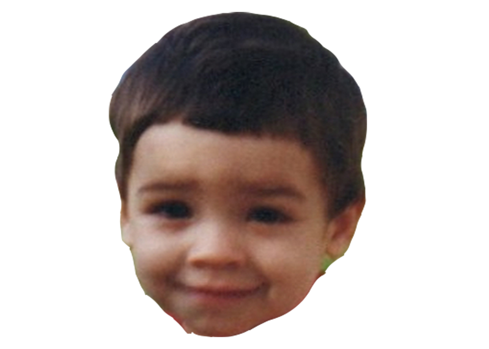
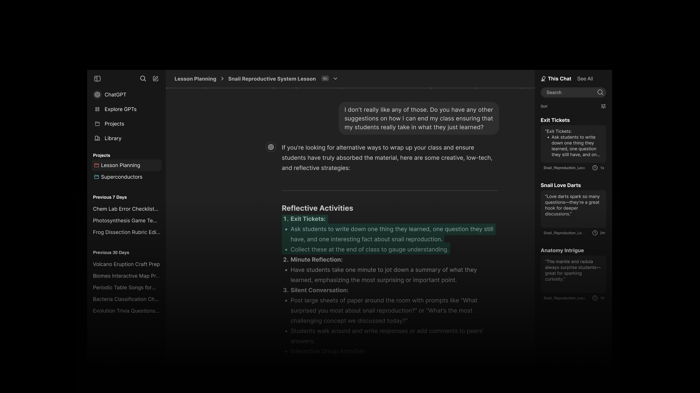
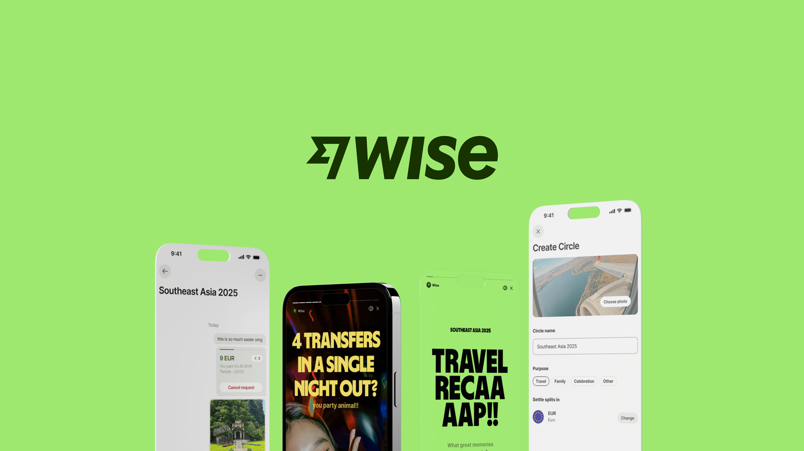

Meet João
He’s anINFP
- Introverted: Energized by solitude, deep reflection over small talk.
- Intuitive: Sees the big picture, trusts imagination and gut feelings.
- Feeling: Values authenticity, driven by inner morals and emotions.
- Prospecting: Open-minded, adaptable, prefers flow over rigid plans.
Which means he’s good at
Soft Skills
- Active Listening
- Creative Problem Solving
- Integrity
Technical Skills
- Content Creation
- User-Centered Design
- Creative Software
Personal Projects
-
ChatGPT
Developing a new feature for Chat GPT main desktop interface
-
Wise
Developing a new feature for the D&AD New Blood Awards 25’